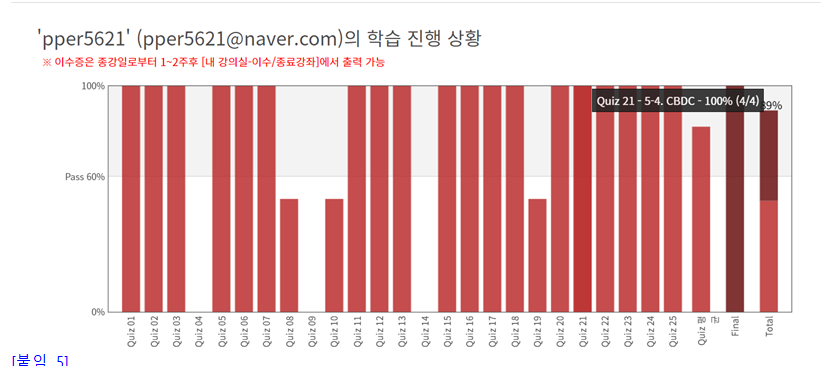
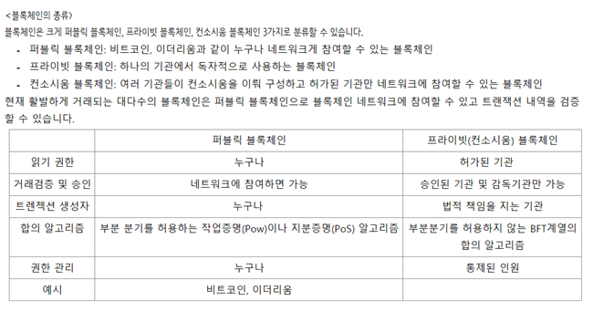

약 8주간 블록체인 부분을 학습하고 토의했습니다.블록체인 시스템이 단순히 비트코인에 쓰이는 프로그램인줄 알았습니다. 하지만 블록체인 시스템도 완벽한 것이 아니라 장단점이 있고 프로그램이 보완과 발전을 반복하면서 여러 버전들이 나와있다는 것을 알 수 있었다는게 재밌었습니다. 블록체인 시스템들과 플랫폼, 응용프로그램을 공부하며 사람들이 왜 블록체인 시스템에 열광하는지 이해하였으며 블록체인 관련 기사들도 예전과 달리 거리낌없이 읽을 수 있게 되었습니다. 미래기술들이 점점 탈중앙화와 메타버스를 기준으로 흘러가기 시작하였습니다. 그 중의 하나인 블록체인을 공부하며 미래기술들의 개발방향이 무슨 목표를 향해 나가는지 깨닫는 시간이 되었습니다.
비잔틴 장애 허용이란 장애가 있더라도 전체 1/3이 넘지 않는다 면 시스템이 정상 작동하도록 허용하는 합의 알고리즘입니다. 3F+1을 3으로 나누면 F + 1/3입니다. 잘못된 노드의 수가 2개라고 치면 6+1 = 7이므로 2/7은 1/3보다 작으므로 오류없이 굴러갑니다.
C가 처음 정보를 전달하는 사람이고 0 1 2 3 정보를 전달받는 친구들입니다. 5단계를 걸쳐서 각 노드들이 자신의 정보를 다른 노드들에게 전달을 하는데, 마지막 단계에서 자신이 다른 노드들에게 받은 정보의 개수가 같으면 배신자 노드가 아니라고 인식을 하고, 개수가 다른 노드를 배신자노드 (불완전 노드)라고 인식합니다. 왜냐면 0 1 2는 똑같이 4개의 정보를 받았는데 3만 6개의 정보를 받았다. 그래서 3은 배신자노드입니다.
합의 알고리즘은 암호 화폐 네트워크의 무결성과 보안을 유지하기 위해 중요합니다. 합의 알고리즘은 분산화된 노드들이 어떤 버전의 블록체인이 진짜 버전인지 합의할 수 있게 합니다. 디지털 경제 시스템이 제대로 작동하기 위해서는, 현 상태의 블록체인에 합의하는 것이 필수적입니다. 작업 증명 합의 알고리즘은 비잔티움 장군 문제를 해결하는 최고의 해결책으로 간주되며, 이는 비트코인을 비잔티움 장애 허용 시스템으로 탄생시켰습니다. 이는 비트코인 블록체인이 51% 공격(또는 다수의 공격)과 같은 공격에 매우 강력함을 뜻합니다. 네트워크가 탈중앙화되어 있을 뿐만 아니라, 작업 증명 알고리즘을 사용하기 때문입니다. 마이닝 과정에 드는 높은 비용은 마이너들이 네트워크를 방해하기 위해 자신들의 자원을 투자하는 것을 무척 어렵게 만듭니다..
블록체인 작동 공식과 여러 합의 알고리즘의 형식을 알아보았습니다. PoW(Proof of Work), 지분증명(PoS:Proof of Stake), 위임지분증명 (DPoS:Delegated Proof of Stake), 경과시간증명 (PoET:Proof of Elapsed Time), 권한증명 (PoA:Proof of Authority), 비잔틴장애허용(Byzantine Fault tolerance)등을 세부적으로 알아보았으며 부족한 개념들을 서로 피드백하여 이해하였습니다. 또한 비잔틴장애허용의 3F+1 공식을 심화학습하여 오류노드들이 어떻게 알고리즘에서 탈락되는지에 대하여 알아보았습니다.
PoW란 ? 새로운 블록을 블록체인에 추가하는 작업을 완료했음을 증명하는 합의 알고리즘입니다. 즉, 새로운 블록을 블록체인에 추가할때 참여 당사자들이 수행된 컴퓨터 연산작업이 잘 되었는지 확인하는 과정을 거쳐 블록체인에 연결하는것을 말합니다. 이러한 방식으로 문제를 해결하면 가장 빨리 채굴된 블록만 인정을 받고 나머지는 버려지게 되기 때문에 이중지불 문제가 해결된다는 장점이 있습니다. PoW는 최소 가격대 형성이 확실하게 정해져 있고, 강력한 보안성과 서비스 남용을 쉽게 방지할 수 있다는 장점이 있지만, 채굴난이도가 높아지면서 연산에 필요한 고사양 장비가 많이 필요해 과도한 전력소모로 인한 에너지 낭비가 커지는 문제가 생겨납니다.
DPos란 ? Dpos=위임지분증명 암호화폐 소유자들이 각자의 지분율에 비례한 투표를 해서 자신을 대신하는 대표 노드(node)를 선정하고, 이 대표 노드들이 합의하여 의사결정을 내리는 합의 알고리즘입니다. 민주주의 방식과도 비슷하다고 볼 수 있으며 ‘토큰 민주주의’라고도 불립니다. 소수의 대표 노드들에게만 거래 정보 승인을 받기 때문에 (합의알고리즘) PoW와 PoS 합의 알고리즘에 비하여 처리 성능이 크게 개선되었습니다. DPos 방식에서 대표 노드의 수는 블록체인 플랫폼의 정책에 따라 달라질 수 있으며 이미 선정된 대표 노드라 하더라도 올바른 의사결정을 하지 않으면 언제든 바뀔 수 있다는 장점이 있습니다. 대표적인 블록체인 플랫폼으로는 이오스, 비트셰어(Bitshares), 스팀(Steem), 아크(Ark), 리스크(Lisk) 등이 있습니다.
DeFi (Decentralized Finance)는 탈중앙화 금융입니다. 블록체인 네트워크위에서 작동하는 금융 애플리케이션 생태계를 일컫기도 합니다. 탈 중앙화 금융은 누구나 이용할 수 있으며 중앙기관 없이 작동하는 오픈소스입니다. 허가가 필요 없고 투명한 금융 서비스 생태계를 위한 시스템이라고 볼 수 있습니다. 전통적인 금융은 중개자 역할을 하는 은행, 법원과 같은 기관에 의존하였지만 DeFI는 중개자나 중재자를 필요로 하지 않는 탈중앙화 금융입니다. 이는 상품을 이용하고 제공하는데 드는 비용을 감소시키고 바찰이 없는 금융시스템을 제공하게 됩니다. 또한 데이터는 블록체인 위에 기록이 되기 때문에 수천개의 노드를 통해 전파하므로 검열 또는 잠재적인 서비스 중지가 벌어지지 않습니다. DefI의 가장 큰 장점은 현재의 금융 시스템으로부터 고립된 이들이 금융 서비스를 쉽게 이용할 수 있다는 점입니다. 기존의 금융 시스템은 중재자나 중개인이 존재하기 때문에 저소득 지역에는 제공이 되지 않습니다. 하지만 DeFi를 사용하면 비용이 크게 줄어들며 넓은 범위의 금융 서비스를 사용할 수 있게 되는 것입니다. 하지만 부작용도 존재합니다. DeFi 규제 환경이 모호하기 때문에 법과 DeFi 분류가 불확실 하여 기업들이 DeFi 시장에 뛰어들기를 주저하게 되었습니다. DeFi의 예시 - 은행이 아닌 가상자산 금융 서비스 기업이 역할을 하고있습니다. - Delio 기업은 디파이 서비스를 제공하며 렌딩, 예치, 지갑, 일드파밍, 리퀴디티 서비스를 제공하고 있습니다. - 또한 OK금융그룹과 블록체인 핀테크 사업을 협업하기로 하였습니다. 이를 이용한 플렛폼으로는 은행과 비슷한 활동을 할 수 있는 '에이브'가 있습니다. 하지만 기초적인 볼록체인과 탈중앙화의에 대한 단점으로 디파이 역시 해킹을 당하게 되면 한번 입는 피해가 크고 높은 자유성 보장으로 악용되기 쉽다는 특징을 가지고 있습니다.
ICO (initial Coin Offering)의 대안으로 등장한 IEO ( Initial Exchange Offering ) STO ( Security Token Offering )에 대하여 알아보았습니다. ICO란? ICO는 새로운 블록체인 프로젝트를 개발하는 블록체인 개발자들이 초기 개발 자금을 모집하기 위한 수단으로 사용되는 것입니다. 크라우드 펀딩과 같은 개념으로도 사용됩니다. ICO를 하려는 개발 팀은 프로젝트의 목적과 역량, 핵심 정보를 설명한 백서를 공개해야합니다. 프로젝트가 어떻게 활용될지, 어떤 가치가 있는지, 누가 그것을 필요로 하고, 어떻게 개발에 성공할 수 있을지 등이 탄탄하게 마련되어야 성공적으로 프로젝트를 마무리 할 수 있습니다. 토큰을 만든 후에 투자자들에게 프로젝트 지원 금액을 받고, 투자자는 펀딩한 가격만큼 토큰을 받게 됩니다. 기존 투자 방식보다 기간이 훨신 짧고 백서와 토큰을 개발함에 따라 누구나 시도할 수 있다는 장점이 있습니다. IEO는 ICO중 하나로, 암호화폐 거래소를 통해 암호화폐 초기 배포와 판매가 이루어지는 것을 말합니다. ICO는 새로운 프로젝트에 화폐를 직접 투자하는 방식이지만 IEO는 투자자가 거래소를 통해 개발자의 프로젝트에 간접적으로 투자하는 방식입니다. 신용성이 있는 거래소가 투자를 대신 진행하는 것입니다. ICO의 경우 직접 투자에 대한 난이도가 높은 편이지만 IEO는 정보를 쉽게 얻을 수 있다는 장점이 있습니다. 최소한의 제품을 개발해 놓고 투자를 진행하기 때문에 비교저 안정적입니다. 또한 투자된 프로젝트가 거래소에 바로 상장되기 때문에 수수료를 절감할 수 있습니다. - IEO의 예시 - 2019년 바이낸스에서 펀딩을 목적으로 IEO플랫폼 런치패드를 출시하였다. - 바이낸스 측은 코인을 선별 후 IEO방식으로 판매 - 런치패드를 통해 기프토와 브레드를 성공적으로 출히하게 되었음. 하지만 IEO의 문제점도 있습니다. 거래소가 블록체인 프로젝트를 검증하므로 프로젝트 자체에 대한 신뢰성과 객관성을 확보할 수 있는 장점이 있지만, 거래소가 파산하는 경우가 생기면 투자금의 회수가 어렵고 정부규제에 따라 거래소 영업이 정지될 수 있는 점도 있습니다. 그래서 IEO에 투자를 할 때에는 거래소에 대해서 공부를 해놓는 것이 좋습니다. STO는 증권형 토큰 발행 방식입니다. 코인으로 자산을 증권화 해서 사고 팔 수 있게 하는 개념입니다. 회사 주식, 부동산, 건물, 미술작품, 골동품등의 자산을 코튼화 할 수 있으며 자산에 다수의 사람들이 투자를 하고 소유권과 투자내역을 블록체인 방식으로 보안할 수 있습니다. STO의 예시 - 2018 뉴욕 맨해튼의 빌딩 한 채가 STO를 통해 판매된 세계 최초의 사례로 소개되었습니다. - STO를 통하여 건물의 소유권을 여러 사람이 나눠가질 수 있게 된 것입니다. STO는 기업 이익 분배다 주식 배당, 투표권, 자산유동화증권 등의 기존 증권의 특징을 가지고 있기 때문에 증권 관리 감독 기관의 규제를 받습니다. 따라서 합법적인 방식으로 안전하게 자금을 조달할 수 있으며 스마트 컨트랙트를 바탕으로 정보를 실시간으로 관리할 수 있기 때문에 간편합니다.
비트코인은 디지털 화폐입니다. 비트코인은 어떠한 실제 형태를 취하지 않으므로 이론적으로 어디에든 저장할 수 있습니다. 따라서 중요한 것은 자신의 비트코인 주소와 거래 서명을 보관하는 데 사용하는 개인 키로서, 이를 매우 안전하게 보관해야 합니다. 자금을 받는 사람의 공공 키와 자신의 개인 키를 결합한 것이 비트코인 거래를 가능하게 하는 중요한 요소가 되는 것입니다. 그렇다면 지갑의 종류에는 어떤 것이 있을까? 1. 종이지갑 - 종이지갑은 비트코인을 받는 데 필요한 공공 주소와 개인 키 정보가 적혀 있는 종이쪽지를 말합니다. 이것은 그 주소에 저장되어 있는 비트코인을 지출하거나 송금하는 데 필요합니다. 종이 지갑은 때때로 QR코드 형태로 인쇄되어 있어서, 이를 스캔한 다음 소프트웨어 지갑에 추가해 거래할 수 있습니다. 종이 지갑은 자신의 개인 키를 통해 무작위 비트코인 주소를 만들어낼 수 있게 해주는 비트어드레스나 비트코인페이퍼월렛 같은 서비스를 통해 생성될 수 있습니다. 그렇게 생성된 키는 인쇄할 수 있으며, 일부 서비스에서는 이를 위조가 불가능한 디자인이나 홀로그램 라벨로 만들어서 주기도 합니다. 종이 지갑의 이점 중 하나는 키가 오프라인에 저장되기 때문에 해킹 공격의 우려가 없다는 점입니다. 그렇지만 지갑을 만들 때 주의해야 할 점은 여전히 남아 있습니다. 종이 지갑을 생성하기 전에 주변에 쳐다보는 사람이 있는지 확인해야 합니다. 그리고 스파이우어가 자신의 프로그램을 가동시켜 운영체제를 확인해야 합니다. 또한 종이 지갑이 만들어진 다음에 웹사이트 코드는 오프라인에서도 작용이 되어야 하며, 이를 통해서 키를 생성하기 전에 인터넷 연결이 끊어져야 합니다. 마지막으로, 네트워크와 연결되지 않은 프린터로 이를 인쇄해야 합니다. 2. 모바일 지갑 - 이것은 스마트폰 어플로 사용이 가능한 지갑입니다.개인 키를 저장해놓고 물품 대금을 전화를 통해 직접 지불할 수 있습니다. 어떤 어플은 스마트폰의 근거리 무선통신인 NFC 기능을 통해 지불할 수 있도록 해줌으로써 일체의 개인정보를 드러내는 일 없이 폰을 카드리더기 근처에 갖다 댐으로써 결제할 수 있는 방법입니다. 삼성페이가 이에 해당됩니다. 모바일 지갑은 비트코인 저장을 위한 편리한 휴대용 수단이긴 하지만 해킹 공격에 취약하다는 약점이 있습니다. 게다가 누군가가 스마트폰을 훔쳐가면 지갑을 사용할 수 없게 됩니다. 안드로이드는 기기용으로 다양한 유형의 비트코인 지갑 앱이 존재합니다. 애플은 2014년 2월부터 앱스토어 상에서 비트코인 지갑을 금지했다가 그 후 몇 달 만에 이러한 결정을 철회했다고도 합니다. 3. 웹 지갑 - 웹 지갑은 모바일 지갑과 별 다를 바 없이 인터넷과 연결된 기기를 통해 언제 어디서든지 자금에 접속할 수 있게 해줍니다. 하지만 이 월렛에 충분한 보안 조치를 취하지 않을 경우, 웹사이트 관리 사업자가 사용자의 자금을 훔쳐갈 수도 있습니다. 일부 월렛은 거래소를 통해 제공되는데, 거래소가 갑자기 파산하여 페쇄되거나 사용자 자금을 빼돌려서 도망치는 경우도 있었다고 합니다. 4. 데스크탑 지갑 - 데스크탑 지갑은 컴퓨터에 다운로드 해서 설치할 수 있습니다. 이 경우, 개인 키는 하드 드라이브에 저장됩니다. 이 지갑은 훔치기도 어렵기 때문에 온라인 지갑이나 모바일 지갑에 비해 안전합니다. 하지만 인터넷에 연결되어 있기 때문에 완벽하게 안전하다고 볼 순 없습니다. 그러나 소액의 비트코인을 컴퓨터를 통해 거래하는 사람들에게는 적합하다고 볼 수 있습니다. 5. 하드웨어 지갑 사용자의 개인 키를 안전한 하드웨어 기기 안에 보관하는 독특한 방식의 비트코인 지갑입니다. 이는 비트코인 보관을 위한 가장 안전한 방법으로 꼽힙니다. 이제까지 하드웨어 지갑에 보관된 자금을 도난 맞은 사례가 한 건도 보고된 적이 없다고 합니다. 하드웨어 지갑은 언제나 높은 보안성을 유지할 수 있으며, 컴퓨터 바이러스를 걱정할 필요가 없고, 저장되어 있는 자금은 절대로 기기 밖으로 전송될 수 없도록 되어 있습니다.